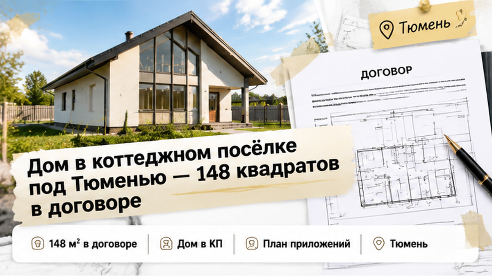
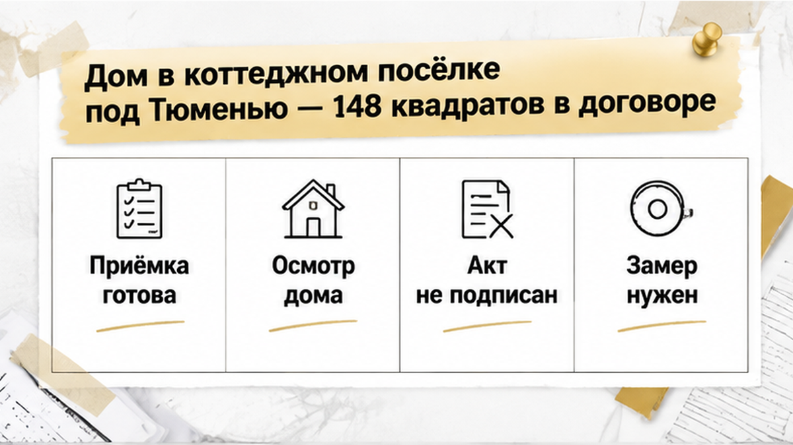
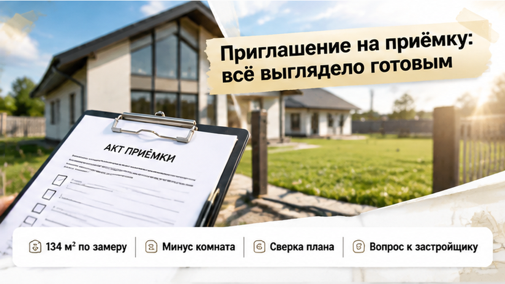
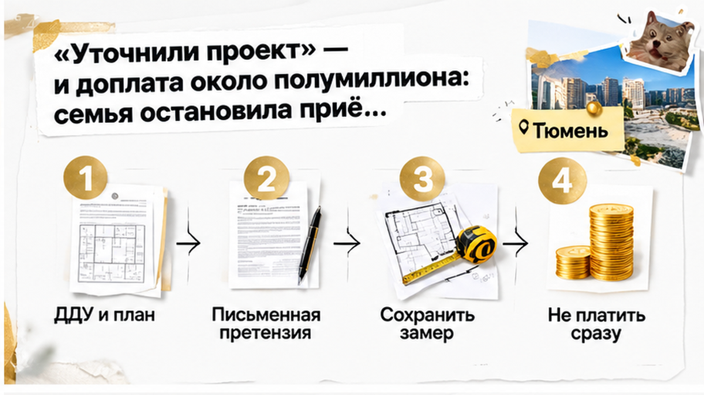
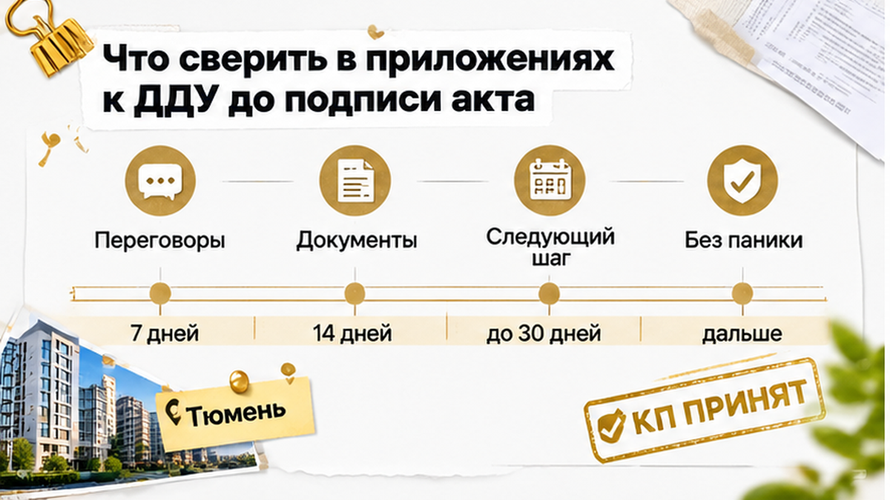
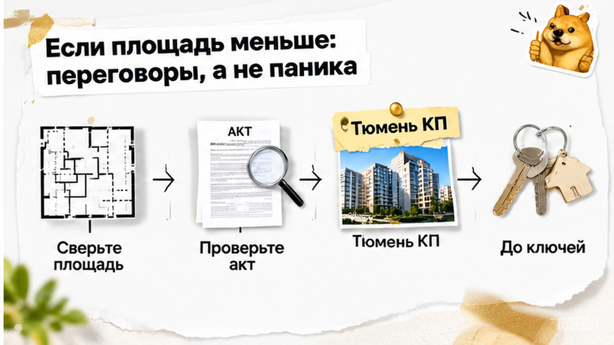

С вами Святослав Шакин, риелтор в Тюмени. На приёмке дома под Тюменью семье не досчитали 14 квадратных метров, а за получение ключей предложили доплатить ещё 420–480 тысяч рублей. В договоре значились 148 квадратов, независимый замер показал 134 — разница размером с небольшую комнату. Часть отделки покупатели уже оплатили по графику и приехали смотреть дом перед передачей, а не обсуждать новый платёж почти на полмиллиона. Застройщик объяснил расхождение уточнением проекта, но от этого комнаты просторнее не стали. Перед семьёй оказался совсем не тот выбор, которого ждёшь у двери своего будущего дома: соглашаться ради ключей или останавливать приёмку и требовать объяснений.
В Telegram и MAX разбираю, что проверять в новостройке до подписи и оплаты. Не рекламные обещания, а документы, с которыми покупатель остаётся, когда разговор с менеджером заканчивается.
Семья покупала дом под Тюменью для постоянной жизни, а не для поездок на выходные. В договоре участия в долевом строительстве стояла площадь 148 квадратных метров. Под неё считали бюджет, прикидывали расстановку мебели, думали, хватит ли места детям. Это была не красивая цифра из объявления, которую потом трудно найти: она была записана в договоре.
И расходы на покупку не закончились первым платежом. Отделку оплачивали по графику, часть денег к приёмке уже внесли. Поэтому приглашение от застройщика выглядело долгожданным завершением покупки: дом готов, можно ехать смотреть и забирать ключи. В такой момент хочется обсуждать переезд, а не снова открывать папку с документами.
Но именно в этой папке было описание того, за что семья заплатила. Не просто «дом в посёлке», а объект с определённой площадью, планировкой и составом помещений. Покупателю вполне естественно смотреть на готовые комнаты и представлять в них свою мебель. Я бы здесь сначала сопоставил комнаты с планом: передают ли людям тот дом, который они покупали по документам?



На осмотре ничто не мешало перейти к обычному сценарию приёмки. Дом выглядел готовым к передаче, предусмотренная договором часть работ была выполнена. Оставалось пройти по помещениям, обсудить замечания, заняться актом и ключами. После ожидания и платежей эта последовательность кажется почти формальностью: главное ведь уже построили.
Застройщик предложил ориентироваться на готовность дома, а не начинать спор о площади. Для покупателей в этом и была трудность: перед ними не недостроенная коробка, а жильё, в которое они рассчитывали переехать. Часть отделки оплачена, дети ждут переезда. Остановиться у самой двери своего будущего дома психологически труднее, чем задавать вопросы в начале покупки.
«Дом же стоит, комнаты на месте — что ещё проверять?» Вопрос понятный, только глазами общую площадь не сложишь. На осмотре легко заметить неготовую стену, но гораздо сложнее понять, совпадают ли размеры всех помещений с договором. Поэтому семья не стала сразу подписывать акт: сначала решили проверить метраж независимым замером.
Результат замера — 134 квадратных метра. С договорной цифрой он не сошёлся на 14 квадратов: по площади это целая небольшая комната. Не значит, что из дома буквально убрали комнату — привычные помещения были на месте. Но вместе они не давали того метража, на который рассчитывала семья.
Стали смотреть размеры помещений, сопоставлять их с планом и проверять приложения к договору. Здесь уже было недостаточно впечатления «вроде просторно». Нужно было понять, откуда взялась разница: что включили в договорную площадь и что получилось при проверке готового дома. Пока это не выяснено, ни внешний вид дома, ни готовность выдать ключи на вопрос не отвечают.
Для семьи эти метры не были отвлечённой цифрой. Пространство, которое они распределяли под свою жизнь, оказалось меньше ожидаемого. При этом деньги за часть отделки уже внесены, а значит, разговор касался не только размеров комнат, но и оплаченных работ. Просто махнуть рукой — «ладно, зато можно въезжать» — означало бы оставить без ответа слишком много вопросов.
Сам по себе независимый замер ещё не объяснял причину расхождения и не решал спор о цене. Зато теперь у покупателей был конкретный результат, который можно сопоставлять с договором, а не ощущение, что дом тесноват. Дальше требовалось объяснение застройщика по документам. Вместо спокойного завершения приёмки начался разговор о том, почему покупателям передают меньшую площадь и что это означает для их платежей.

Объяснение застройщика сводилось к тому, что проект уточнили. Но семье предстояло не просто согласиться с меньшей площадью: передачу ключей связали с доплатой примерно 420–480 тысяч рублей. Покупатели рассчитывали закончить оформление, а вместо этого должны были решить, готовы ли они внести ещё деньги, не разобравшись, за что.
В такой момент давит не только сумма. Часть отделки уже оплачена, дети ждут переезда, готовый дом стоит перед глазами. Очень хочется закончить этот разговор, забрать ключи и разбираться с бумагами потом. Только доплата уйдёт сейчас, а объяснение, почему она вообще появилась, останется на потом.
Уточнение проекта само по себе не отвечает на два простых вопроса: откуда взялось расхождение площади и за что покупателю выставили дополнительный счёт. Это разные вопросы, и одним устным объяснением оба не закрыть. Даже если изменение проекта подтверждено документами, ещё нужно сверить его с договором и понять, как рассчитана цена.
В тот день семья акт не подписала, ключи не взяла и доплату не внесла. Покупатели зафиксировали результат замера, запросили расчёт и предложили сначала разобраться с расхождением. Это известный итог приёмки, а не победа в споре: сведений о возврате денег или согласованном перерасчёте пока нет. Но почти полмиллиона рублей не ушли застройщику только ради того, чтобы получить ключи немедленно.
Вы бы забрали ключи с доплатой и спорили потом — или отложили переезд, пока застройщик не объяснит расчёт?

Здесь я бы положил рядом договор участия в долевом строительстве, план дома из приложений и результат независимого замера. Смотреть нужно не только на общую цифру: важно понять, какие помещения в неё включены и одинаково ли считали площадь в документах и на месте. Само расхождение уже требует объяснения, но причину по одной разнице цифр не установить. Поэтому результат замера нужно сохранить с размерами помещений и способом подсчёта, а не оставлять устным сообщением специалиста.
Следом — документы, на которые ссылается застройщик. Что именно уточнили в проекте, как это связано с условиями договора и откуда появилась доплата? Ответ нужен в расчёте и бумагах, а не в обещании всё оформить после передачи ключей. Отдельно стоит сверить уже оплаченные работы: платежи за отделку тоже нельзя потерять из виду, когда обсуждается окончательная стоимость дома в КП.
Если объяснения не сходятся, расхождение и требования стоит изложить письменно, приложив договор, план, замер и подтверждения платежей. Просить нужно конкретный ответ о площади, цене и порядке передачи дома, а не просто «разобраться». Независимый замер помогает обосновать позицию, но не гарантирует возврат денег; возможность перерасчёта и дальнейшие действия зависят от документов. И отказ от подписи сам по себе не решает спор — замечания важно оформить и сохранить копии.
В другой истории на приёмке в Тюмени покупатели увидели голые стены вместо обещанной отделки и не стали превращать акт приёмки в формальность. В КП под Тюменью похожий стоп случился из‑за расхождения декларации и обещаний по коммуникациям, а здесь — из‑за метража. Подпись не должна заменять ответ на вопрос: соответствует ли дом тому, за что человек заплатил.
До подписи акта приёмки можно спокойно сверить площадь в договоре и результат замера. Напишите в Telegram или MAX — начнём с приложений к ДДУ, а не с доплаты «за ключи сегодня».
Остановить подписание — не значит отказаться от дома. Это значит не добавлять к спорному метражу ещё и поспешно принятое денежное обязательство. После проверки можно обсуждать перерасчёт, основания доплаты и условия передачи, понимая, с чем именно вы соглашаетесь. Не по принципу «нам уже пора переезжать», а по документам.
Готовый дом никуда не исчезает от просьбы объяснить расчёт. Желание поскорее въехать тоже вполне понятно: семья покупала место для жизни, а не переписку с застройщиком. Но между «заплатить сегодня» и «потерять дом» не стоит автоматически ставить знак равенства. Сначала нужно выяснить условия договора и спокойно выбрать следующий шаг — даже если менеджер давит сроком «ключи только сегодня».
Если выбираете дом или квартиру в новостройке Тюмени, подключусь до брони: лично разберу документы и вопросы, которые лучше задать до денег. Если впереди уже приёмка, начнём с договора и приложений — телефон +7 922 001 65 05.
Ещё один КП-кейс: замер на сдаче показал потолки ниже ДДU — там семья тоже не подписала акт сразу. Механика другая, но приёмка снова стала местом, где цифры решают больше, чем готовый фасад.
